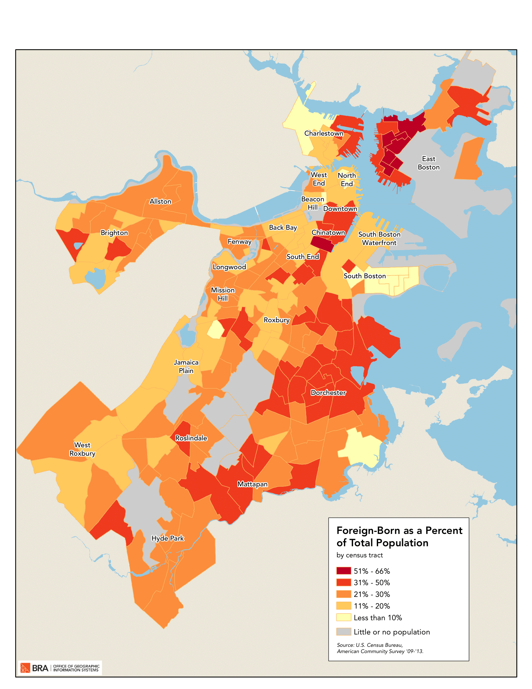

Immigrants by Country
Demographic Map
Description
Boston is home to more people from more countries than ever before. The foreign born are visible throughout the city,from Haitian churches in Mattapan, Cape Verdean salons in Upham’s Corner, Dominican restaurants in Roxbury, and Vietnamese businesses in the Fields Corner neighborhood of Dorchester. In recent years, many of Boston’s neighborhoods experienced an increase in the foreign-born population, who now account for approximately 27 percent of Boston’s total population. In 2014, Boston had the seventh highest share of foreign-born residents among the 25 largest cities in the United States. According to the 2014 American Community Survey (ACS), Boston’s foreign-born population stood at 177,461, an increase of over 17 percent from 2000.